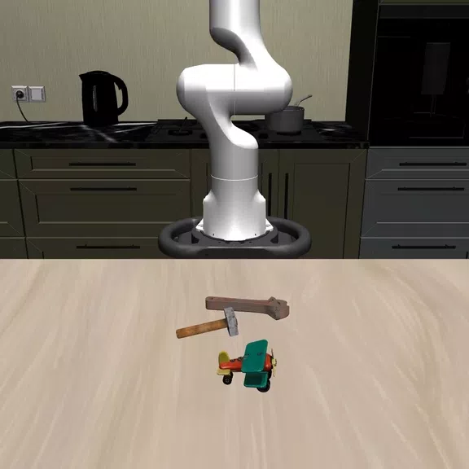

OmniRobotHome: A Multi-Camera Home Platform for Real-Time Human-Robot Interaction
arXiv, 2026
A room-scale residential platform with 48 synchronized RGB cameras and coordinated multi-robot actuation for real-time human-robot interaction.
MS/PhD Student · Computer Vision
I am a MS/PhD student at Seoul National University advised by Prof. Hanbyul Joo. My research interests are in computer vision, especially in 3D/4D reconstruction and object 6D pose estimation.

Our work, VLMPose, got accepted to ECCV 2026.
I'm joining the Visual Computing Lab as a MS/PhD student.
Our work, PhysGaia, got accepted to CVPR 2026.
arXiv, 2026
A room-scale residential platform with 48 synchronized RGB cameras and coordinated multi-robot actuation for real-time human-robot interaction.
arXiv, 2026
An autonomous real-world system that generates, selects, and validates dexterous grasps on a physical multi-fingered hand, collecting both successful and failed trajectories with no per-trial human supervision.

ECCV, 2026
Without additional training, A VLM agent iteratively refines an object's 6D pose to follow text instructions.

CVPR, 2026
Project Page arXiv Dataset Code
A novel physics-aware dataset specifically designed for Dynamic Novel View Synthesis (DyNVS), encompassing both structured objects and unstructured physical phenomena.